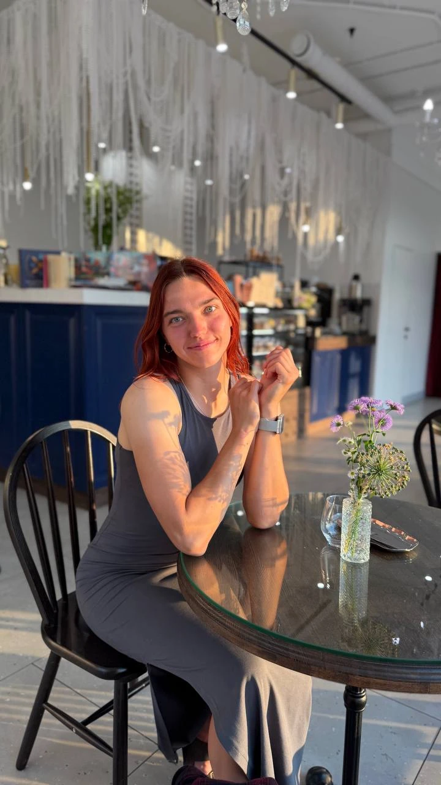

Изучаю отклики
Сверяю опыт кандидатки и её пожелания по графику и условиям с вашим запросом.
Я беру на себя поиск, собеседования и проверки, а вам оставляю главное — выбрать человека, с которым спокойно.

Сверяю опыт кандидатки и её пожелания по графику и условиям с вашим запросом.
Уточняю условия вакансии и рассказываю кандидатке о вашей семье.
Задаю вопросы о ситуациях из жизни вашей семьи. В анкете объясняю, почему предлагаю познакомиться с няней и что стоит обсудить на встрече.
Для семьи с двумя школьниками спрошу, как няня поступит, если один ребёнок просит помочь с уроками, а другой затевает ссору. Для семьи с трёхлеткой обсудим, как она отреагирует, если ребёнок расплачется и откажется уходить с площадки.
Посмотреть пример анкеты ↗
Подбираю нянь с 2022 года. Начинала в двух агентствах, а теперь веду каждый подбор лично. За это время провела больше 500 собеседований и помогла найти няню более чем 40 семьям.

Я старшая сестра в многодетной семье. С 13 лет часто оставалась дома за главную и знаю, как можно любить детей и всё равно уставать. Поэтому на первом разговоре мне важно понять, где вам особенно нужна помощь.

До рекрутинга я пять лет работала няней, тренером и педагогом. Прошла очную переподготовку на няню-гувернантку и рекрутера по подбору домашнего персонала: больше 400 академических часов с практикой.

Я мастер спорта по регби-7. Однажды провела собеседование с няней прямо в перерыве между играми. В итоге она подошла семье и работала с ребёнком до детского сада.
Вы оставляете заявку,
в которой рассказываете
о вашей семье
Я собираю портрет идеальной няни,
согласовываю критерии поиска
Подбираю кандидатов
и провожу собеседования
Вы получаете подробные
анкеты и знакомитесь
с подходящими кандидатами
Нахожусь с вами на связи
после выхода няни на работу,
6 месяцев гарантии замены
Стоимость подбора
За поиск, собеседования и сопровождение семьи.
Стоимость подбора равна одному месячному окладу выбранной няни. Предоплата — 25 000 ₽. Остаток оплачивается после одной-двух пробных недель.
Я провожу интервью под конкретную вакансию: рассказываю кандидату о семье и обсуждаю ситуации, с которыми няня встретится в работе. Вы получаете подробный профиль и мои личные комментарии.
Количество анкет не ограничено. Продолжаем поиск, пока не найдём подходящего вашей семье кандидата.
Гарантия бесплатной замены действует шесть месяцев. Если сотрудничество с няней не сложилось, я подберу замену.
Напишите мне в Telegram. Расскажите о возрасте ребёнка, нужном графике и задачах няни. Форму на сайте можно использовать, чтобы подготовить текст сообщения для отправки.
Мы искали няню через агентства, но всё не то. Настя подошла по-человечески и учла все детали, предложила подходящих кандидатов. Рекомендуем!
Настя помогла найти няню для дочки. Очень внимательная, отвечает быстро, понимает, что нужно семье. Няня уже полгода с нами — всё отлично!
Спасибо за подбор чудесной няни! Настя провела собеседования, проверила рекомендации и была рядом до самого выхода на работу. Очень спокойный и надёжный человек.
Светлана была первой няней, которую я предложила семье. Она работала с ребёнком до его выхода в детский сад, а затем перешла в другую семью, которой я помогала с подбором.
Посмотреть анкету Светланы ↗Оставьте контакт, чтобы договориться о созвоне.